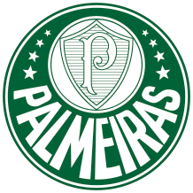

Primeiro campeão mundial de clubes!
Para o suíço, o título da Taça Rio de 1951 pode e deve ser considerado um título mundial. “Devemos reconhecer que o Palmeiras foi o primeiro campeão mundial de clubes e ponto final. Foi o primeiro”, enfatizou Blatter.
Relembre a campanha do Palmeiras no Mundial de 1951
Fase de grupos (2ª rodada) – Palmeiras 2×1 Estrela Vermelha-IUG.Fase de grupos (3ª rodada) – Palmeiras 0x4 Juventus-ITA.
Semifinal (primeiro jogo) – Palmeiras 2×1 Vasco.
Semifinal (segundo jogo) – Vasco 0x0 Palmeiras.
Final (primeiro jogo) – Palmeiras 1×0 Juventus.
Final (segundo jogo) – Juventus 2×2 Palmeiras.